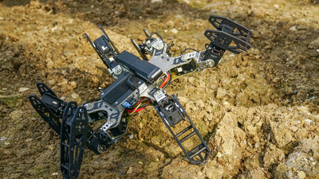

Resibots - ERC Starting Grant¶
Principal Investigator: Jean-Baptiste Mouret
Period: 2015-2020 (May)
{kind=link}
Despite over 50 years of research in robotics, most existing robots are far from being as resilient as the simplest animals: they are fragile machines that easily stop functioning in difficult conditions. The goal of this project is to radically change this situation by providing the algorithmic foundations for low-cost robots that can autonomously recover from unforeseen damages in a few minutes.
The current approach to fault tolerance is inherited from safety-critical systems (e.g. spaceships or nuclear plants). It is inappropriate for low-cost autonomous robots because it relies on diagnosis procedures, which require expensive proprioceptive sensors, and contingency plans, which cannot cover all the possible situations that an autonomous robot can encounter.
It is here contended that trial-and-error learning algorithms provide an alternative approach that does not require diagnosis, nor pre-defined contingency plans. In this project, we will develop and study a novel family of such learning algorithms that make it possible for autonomous robots to quickly discover compensatory behaviors. We will thus shed a new light on one of the most fundamental questions of robotics: how can a robot be as adaptive as an animal? The techniques developed in this project will substantially increase the lifespan of robots without increasing their cost and open new research avenues for adaptive machines.
Contents¶
Project’s website¶
- Resibots - ERC Starting Grant
- Videos
- Lab & Robots (photos)
- Publications
- FAQ
- What are the potential applications of this work?
- What is the main difference between this work and previous approaches? Why does it work so well?
- What are typical ways people misunderstand this work? Can you tell us things about your algorithm that are not obvious?
- What kinds of damage can the robots recover from?
- Does this work for any robot?
- Is this technique expensive?
- Did the algorithm ever learn to do anything that surprised you? Any fun anecdote?
- What did we find most surprising?
- What are the most exciting implications?
- What specific directions do you think your research might or should go from here? What are the next steps?
- What is the biggest challenge towards achieving robots with such damage recovery capabilities?
- Why are legged robots useful?
- How does the robot know it is broken?
- Does the robot really learn?
- Where can I learn more about all of this?
- Team